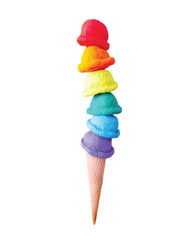
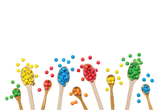
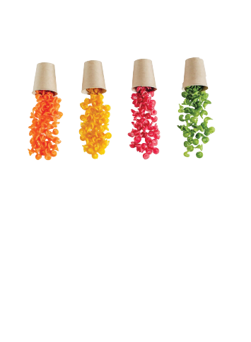

Nova isn’t just a product
It’s a vision born in the mountains of Lebanon.
Empowering Local Farmers
We source directly from small Lebanese farms, supporting their families and traditions.
Protecting the Earth
No chemicals. No waste. Just natural color, made with love and care.
Colorful in its Way
When mountains, soil, wild herbs, and creatives come together to create something magical.
Nova is more than color — it’s a movement for healthier food and a cleaner planet.

